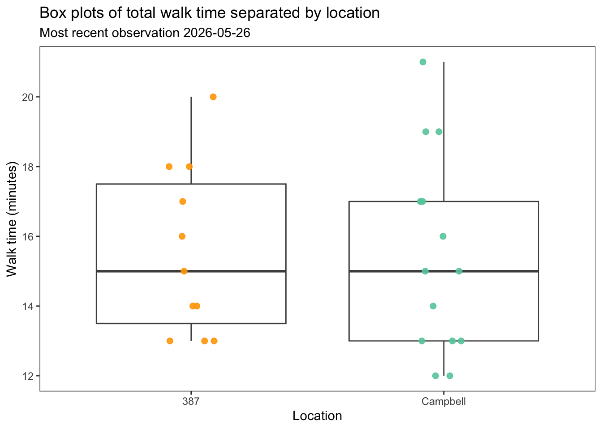
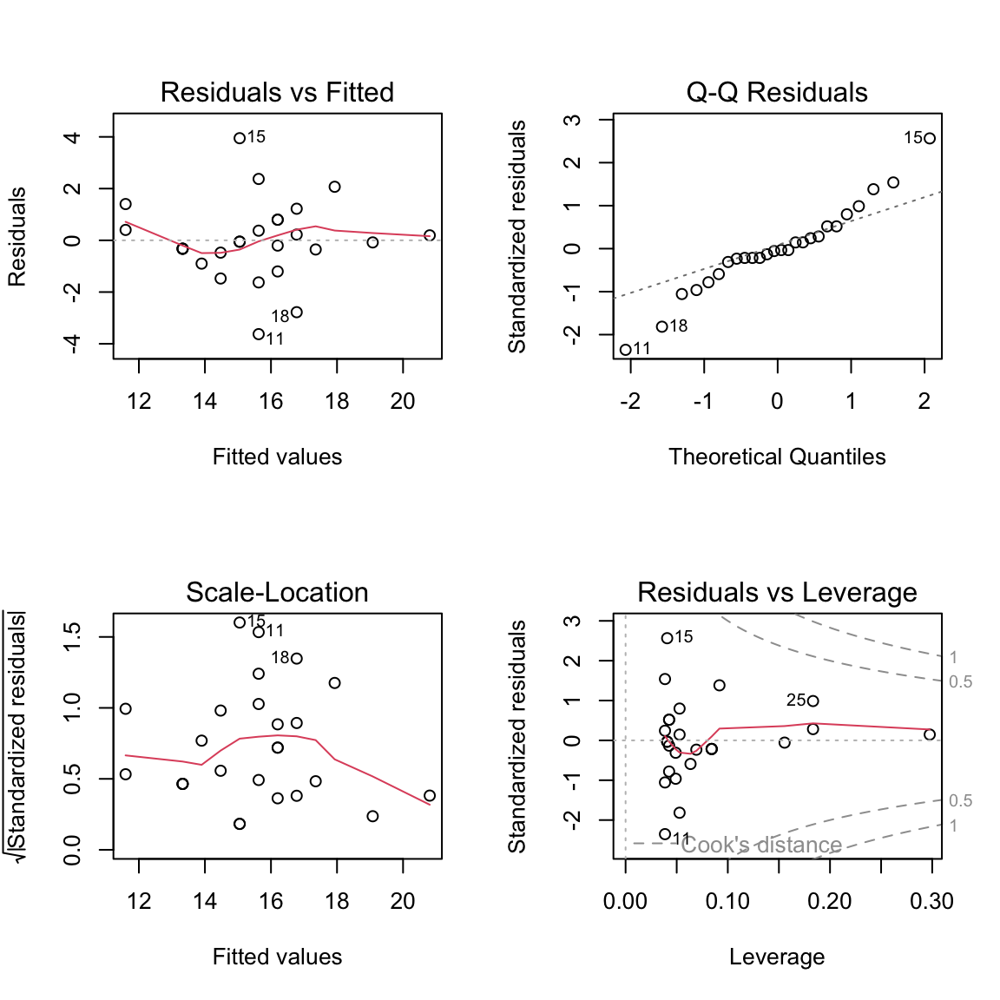
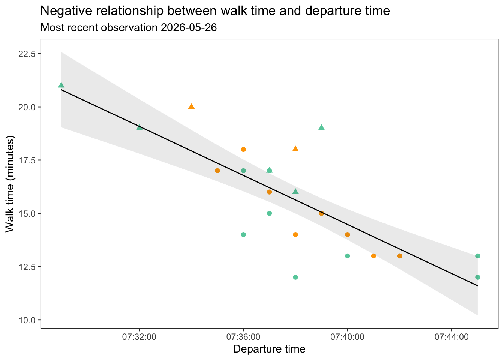

# read in packages
library(tidyverse)
library(janitor)
library(patchwork)
library(ggeffects)
# creating new data frame with personal data
personal_data <- read_csv("personal-datasheet.csv") |>
# standardizing column names
clean_names() |>
# dropping rows with na observations
drop_na() |>
# changing the stop column to display TRUE/FALSE instead of 1/0
mutate(stop = as.logical(stop))
# creating new data frame for model predictions
personal_num <- personal_data |>
# changing depature time column to numeric value
mutate(departure_time = as.numeric(departure_time)) |>
# selecting needed columns for model
select(departure_time, walk_minutes)This is some annotated code creating figures from personal data I collected this quarter. The question I was trying to answer was whether or not daily departure time effected my total walk time to my 8 am classes. There are two plots, with the neccessary annotated code, and figure captions at the bottom.
Categorical vs Response
The categorical variable used in this example is location, split between the two buildings my classes were in. The response is total walk time. This figure was created in order to ensure that walk times were consistent between locations.
# base layer: gg plot
ggplot(data = personal_data, # pulling from personal data frame
aes(x = location, # x-axis
y = walk_minutes, # y-axis
color = location)) + # coloring by location
# first layer: box plot
geom_boxplot(color = "grey30", # changing box plot outline color
linewidth = 0.5,) + # making border lines thicker
# second layer: jitter plot
geom_jitter(height = 0, # removing vertical jitter
width = 0.1, # slight horizontal jitter
alpha = 0.9, # making points slightly opaque
size = 2) + # making point size larger
# changing theme
theme_bw() +
# removing legend
theme(legend.position = "none",
panel.grid = element_blank()) +
# labeling x- & y-axes and adding title
labs(x = "Location",
y = "Walk time (minutes)",
title = "Box plots of total walk time separated by location",
subtitle = "Most recent observation 2026-05-26") +
# changing colors based on location
scale_color_manual(values = c("Campbell" = "aquamarine3",
"387" = "orange"))
Predictor vs Reponse
The predictor variable for this figure is departure time, the response is walk time. To create this figure, and to ensure there is a linear relationship between the variables, we first need to fit a model. The code for fitting the model is listed first, with the subsequent figure below.
Model Fitting
personalmodel <- lm(
walk_minutes ~ departure_time,
data = personal_num
)
par(mfrow = c(2,2))
plot(personalmodel)
- residuals normally distributed (QQ)
- residuals are homoscedastic (Residuals vs fitted/scale-location)
- no outliers influencing model coeff estimates (leverage)
summary(personalmodel)
Call:
lm(formula = walk_minutes ~ departure_time, data = personal_num)
Residuals:
Min 1Q Median 3Q Max
-3.6270 -0.4453 -0.0661 0.6986 3.9486
Coefficients:
Estimate Std. Error t value Pr(>|t|)
(Intercept) 279.271170 40.049689 6.973 3.28e-07 ***
departure_time -0.009594 0.001457 -6.585 8.23e-07 ***
---
Signif. codes: 0 '***' 0.001 '**' 0.01 '*' 0.05 '.' 0.1 ' ' 1
Residual standard error: 1.572 on 24 degrees of freedom
Multiple R-squared: 0.6437, Adjusted R-squared: 0.6289
F-statistic: 43.37 on 1 and 24 DF, p-value: 8.229e-07# creating new object for predictions
preds <- ggpredict(
personalmodel, # model object
terms = "departure_time" # predictor
)
# displaying prediction
preds# Predicted values of walk_minutes
departure_time | Predicted | 95% CI
-----------------------------------------
26940 | 20.81 | 19.04, 22.58
27120 | 19.08 | 17.80, 20.36
27300 | 17.35 | 16.50, 18.21
27360 | 16.78 | 16.03, 17.52
27420 | 16.20 | 15.53, 16.87
27540 | 15.05 | 14.40, 15.71
27600 | 14.48 | 13.76, 15.19
27900 | 11.60 | 10.21, 12.99Figure
# base layer: ggplot
ggplot(data = personal_data,
aes(x = departure_time, # x-axis
y = walk_minutes, # y-axis
color = location, # coloring by location
shape = stop)) + # changing shape based on stops
# first layer: points
geom_point(size = 2) + # making points larger
# second layer: ribbon representing confidence interval
geom_ribbon(data = preds,
aes(x = x,
y = predicted,
ymin = conf.low,
ymax = conf.high),
alpha = 0.1,
inherit.aes = FALSE) +
# third layer: line representing model predictions
geom_line(data = preds,
aes(x = x,
y = predicted),
inherit.aes = FALSE) +
# changing theme
theme_bw() +
# removing legend
theme(legend.position = "none",
panel.grid = element_blank()) +
# labeling x- & y-axes and adding title
labs(x = "Departure time",
y = "Walk time (minutes)",
title = "Negative relationship between walk time and departure time",
subtitle = "Most recent observation 2026-05-26") +
# changing colors based on location
scale_color_manual(values = c("Campbell" = "aquamarine3",
"387" = "orange"))
Figure 1. Median walk time is identical across locations. Points represent individual daily walk times to two different locations, Building 387 (n = 11) and Campbell Hall (n = 15), on UCSB’s campus from Isla Vista. Boxplots display median walk time value for each location along with interquartile range and total spread. Location groupings are seperated by color (387: orange, Campbell: aquamarine). Data collected by Luke Simon between the dates of 2026-04-20 and 2026-05-26.
Figure 2. Negative relationship between departure time and walk time. Points represent individual daily walk times to two different locations, Building 387 (n = 11) and Campbell Hall (n = 15), on UCSB’s campus from Isla Vista. Point shape represents if a stop was taken on the walk (triangle = TRUE, circle = FALSE), while point color represents location (387: orange, Campbell: aquamarine). Line represents linear model of departure time vs walk time. Ribbon represents 95% confidence interval from predictions. Data collected by Luke Simon between the dates of 2026-04-20 and 2026-05-26.